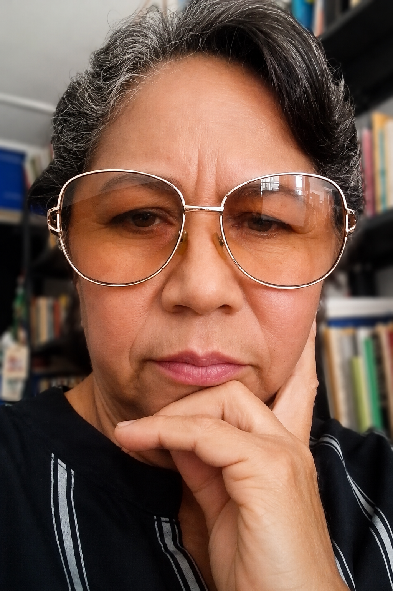
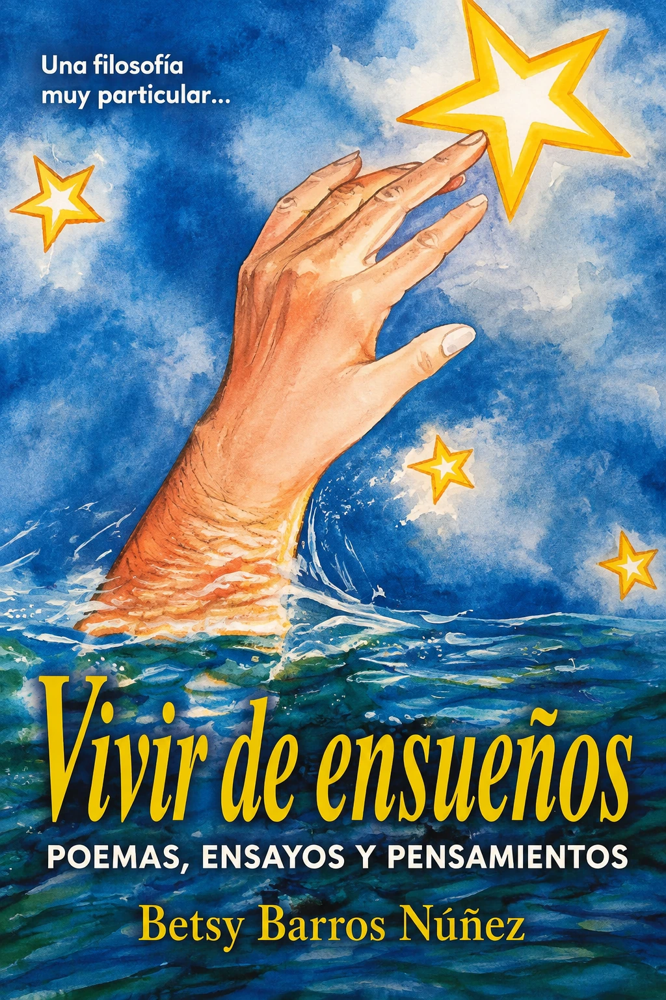
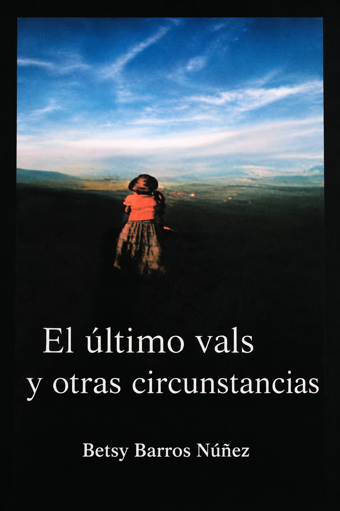
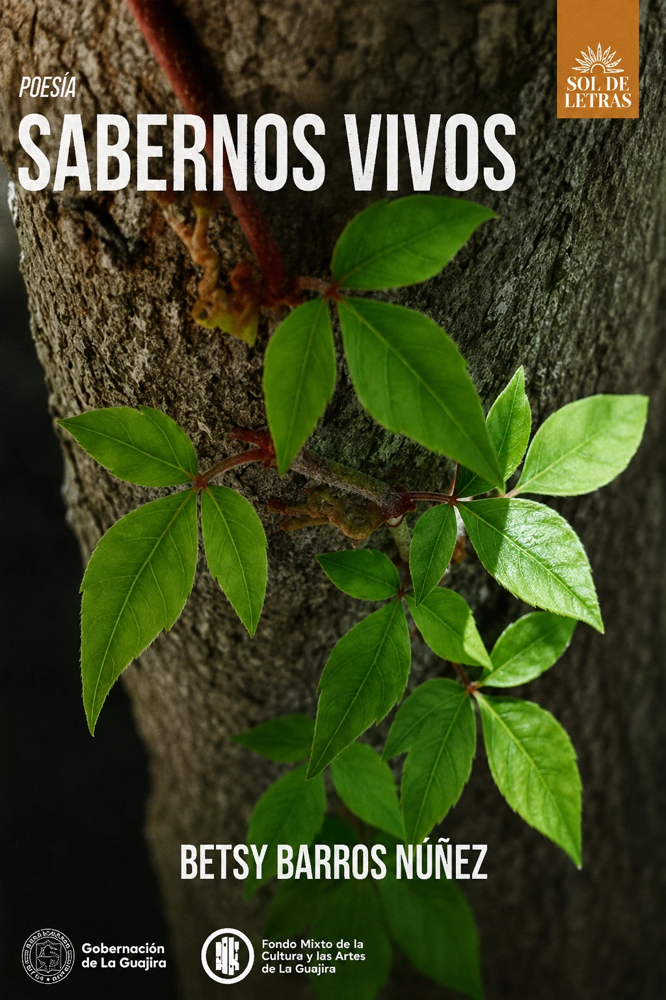
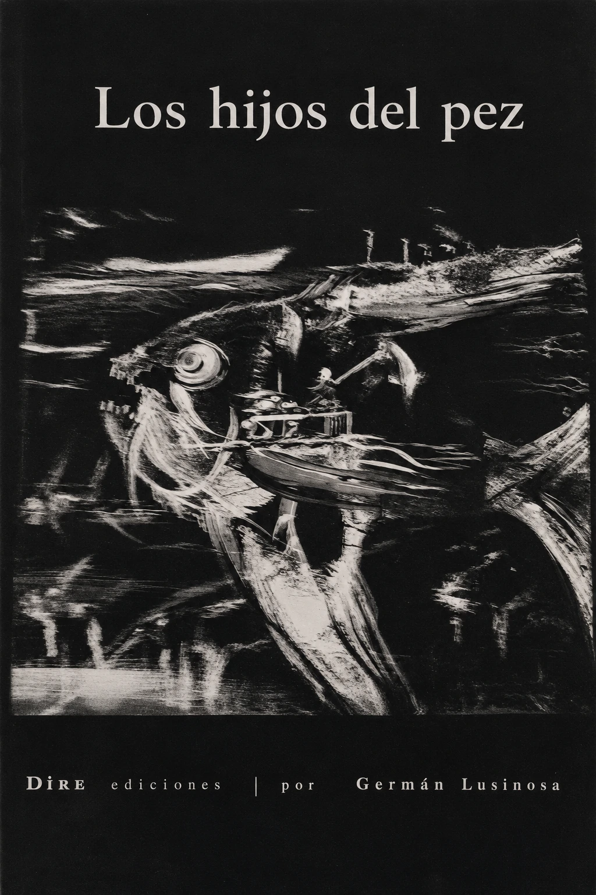
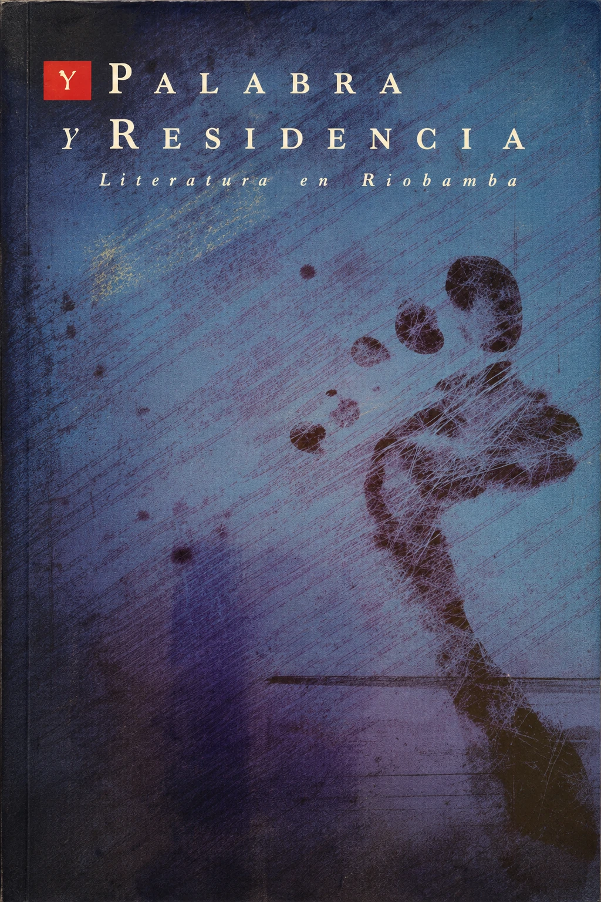
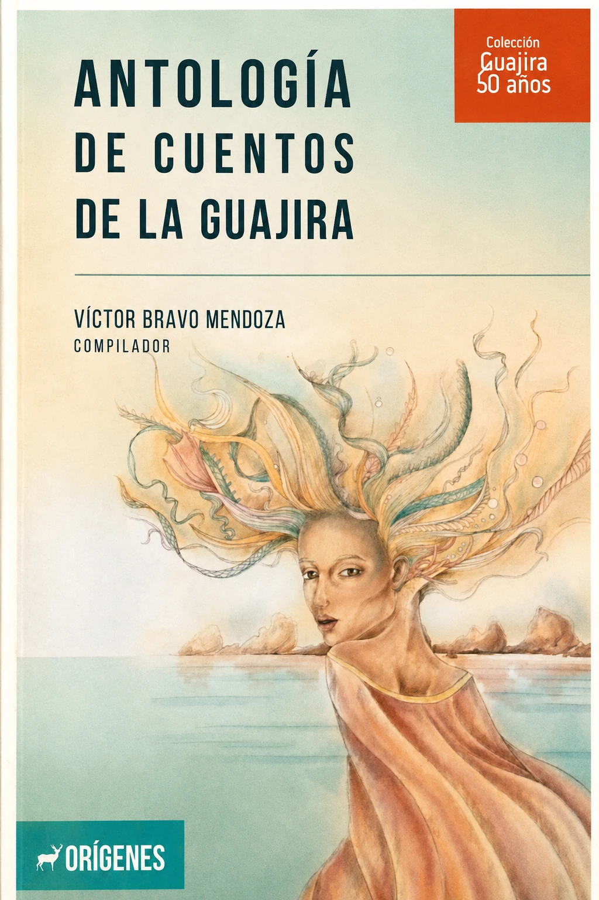
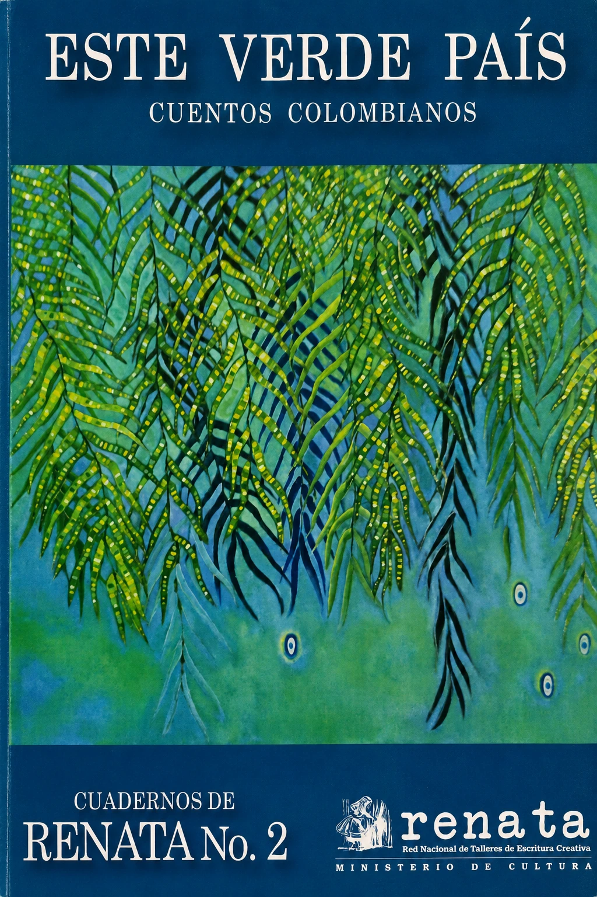

El retrovisor de nuestra memoria
Una reflexión sobre la memoria que guardan los objetos y sobre las huellas afectivas que dejamos en las cosas que acompañan nuestra vida.
Poeta · Escritora · Riohacha, La Guajira
Un espacio para reunir su poesía, obra literaria, publicaciones y artículos de opinión desde La Guajira.

Una entrada a su voz
Un fragmento de su obra para presentar a Betsy Yaneth Barros Núñez desde aquello que mejor la identifica: su propia escritura.
Sabernos Vivos · 2025
Agradece la lluvia que a
ratos cae,sacudiendo la tierra
como sacude el silencio,
también el alud de
piedras que sin avisosobreviene,
como sobrevienen las
palabras y sus abismos.No son más que formas
del árbol
del que cuelga nuestra fatalidad.
Libros y publicaciones
Poemarios, coautorías, antologías y publicaciones culturales que hacen parte del archivo literario de Betsy Barros Núñez.

Primer poemario publicado de la autora.

Segunda publicación poética de Betsy Barros Núñez.

Poemario publicado tras resultar ganadora de la convocatoria Sol de Letras 2024.

Libro colectivo del que Betsy Barros Núñez es coautora.

Publicación colectiva en la que participa como coautora.

Publicación incorporada al archivo de la autora.

Antología nacional donde también han sido publicados cuentos de la autora.
Una selección visual de poemarios, coautorías, antologías y publicaciones vinculadas a la trayectoria literaria de Betsy Barros Núñez.
Trayectoria
2007
Obtuvo el cuarto lugar en la convocatoria del Encuentro de Mujeres Poetas de Roldanillo, Valle, con el poemario inédito Ritual de lo cotidiano.
Publicaciones
Cuentos suyos han sido publicados en Cuadernos Renata Guajira y en la antología nacional Este verde país. Ensayos y poemas suyos también han circulado en revistas impresas y virtuales.
2025
Ganadora de la convocatoria para publicación de libro Sol de Letras 2024, del Fondo Mixto de la Cultura y las Artes de La Guajira.
Blog · Guajira News
Betsy escribe artículos de opinión en Guajira News. El blog reúne sus columnas en un archivo directo para leer, compartir y descargar.

Una reflexión sobre la memoria que guardan los objetos y sobre las huellas afectivas que dejamos en las cosas que acompañan nuestra vida.

Una reflexión sobre la inseguridad como experiencia urbana y sobre la manera en que el miedo, la desigualdad y la debilidad institucional transforman la vida cotidiana en Riohacha.

Una reflexión sobre el ruido urbano en Riohacha, sus efectos sobre la convivencia y la salud, y la manera en que la estridencia puede terminar normalizándose como parte del paisaje cotidiano.

Una evocación de los patios de la infancia como espacios de libertad, memoria, familia y aprendizaje, y una reflexión sobre lo que se pierde cuando desaparecen de la vida cotidiana.

Una reflexión sobre la distancia entre la Riohacha planificada por sus instrumentos de ordenamiento y la ciudad que realmente viven sus habitantes.
Archivo de columnas
Accede en una sola página a todos los artículos publicados en este archivo.